Cozinhas e integrais
Cozinhas completas com bancada, ilha, nichos e eletrodomésticos embutidos. Madeira, MDF laca e porcelanato combinados.
o mais pedido◆ Marcenaria artesanal · desde 1998
Projetamos, produzimos e instalamos móveis sob medida, cozinhas, closets e escadas. Do desenho à última lixa — feito à mão, na medida exata do seu espaço.
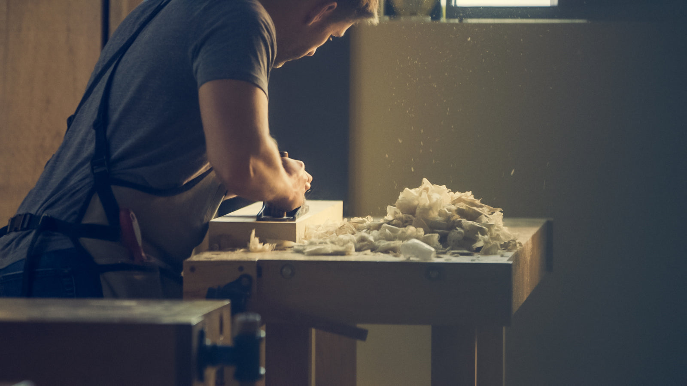
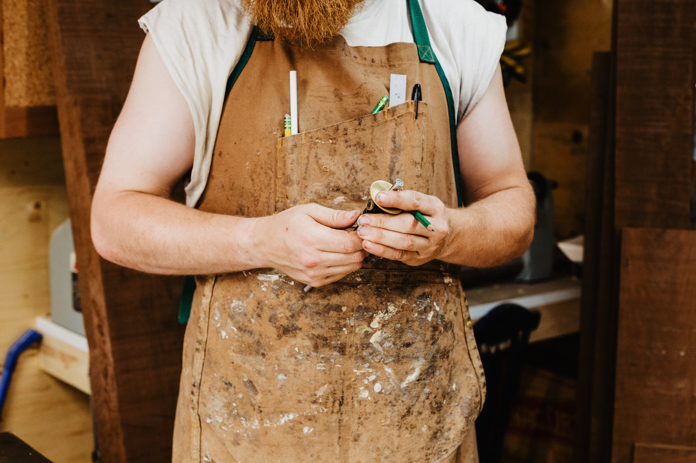
01 — Sobre nós
Somos uma marcenaria familiar que nasceu numa garagem em 1998 e virou referência em móveis sob medida na região. Aqui, cada projeto passa pela mesa de desenho antes de tocar a serra.
Trabalhamos com madeiras de reflorestamento (eucalipto, cumaru, freijó, pinus tratado) e ferragens de primeira linha. Você fala direto com quem desenha e com quem constrói — sem intermediário, sem surpresa no orçamento.
— Seu Nome, marceneiro-chefe
02 — Serviços
Do apartamento compacto ao projeto de arquiteto — escala não assusta.
Cozinhas completas com bancada, ilha, nichos e eletrodomésticos embutidos. Madeira, MDF laca e porcelanato combinados.
o mais pedidoPainéis, estantes suspensas, closets planejados e bibliotecas que aproveitam cada centímetro — inclusive em escadas e sótãos.
Portas de entrada, internas e de correr, rodapés, molduras e revestimentos de parede em madeira maciça ou compensado.
Escadas retas, em L e helicoidais com degraus maciços, guarda-corpos e iluminação embutida. Projeto calculado e certificado.
Mesas, cabeceiras, bancadas, criados-mudos, painéis de TV e petiscos. Do croqui ao acabamento em óleo ou verniz.
Recuperação de móveis antigos, troca de acabamento, reestruturação e atualização de marcenaria já existente.
03 — Portfólio
Clique numa foto para ver em tamanho cheio.
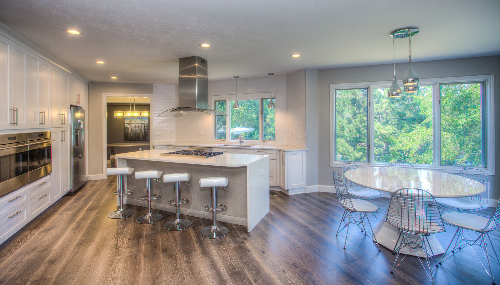
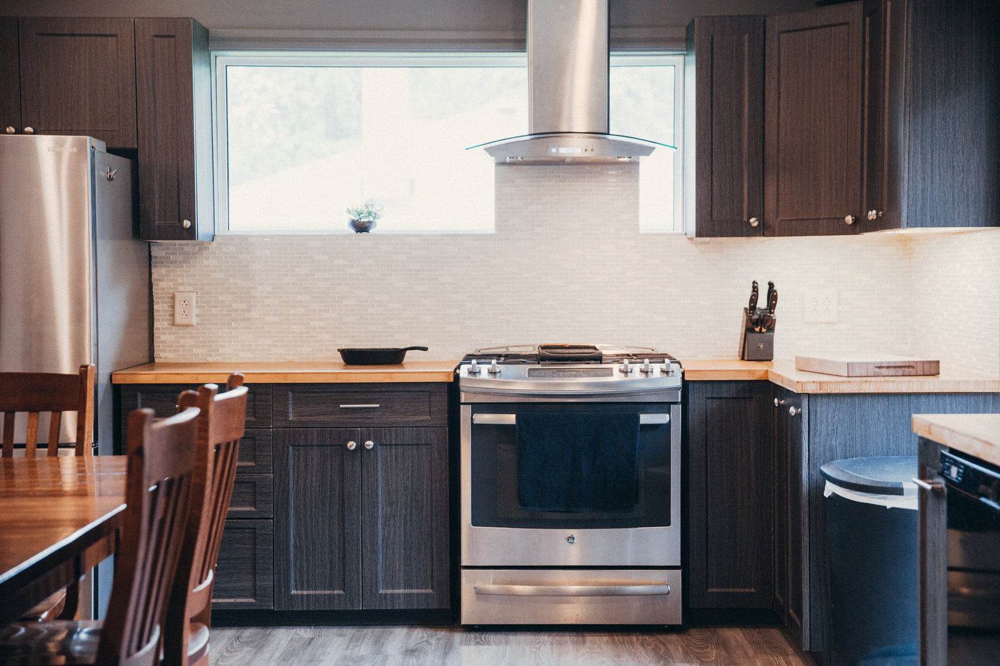
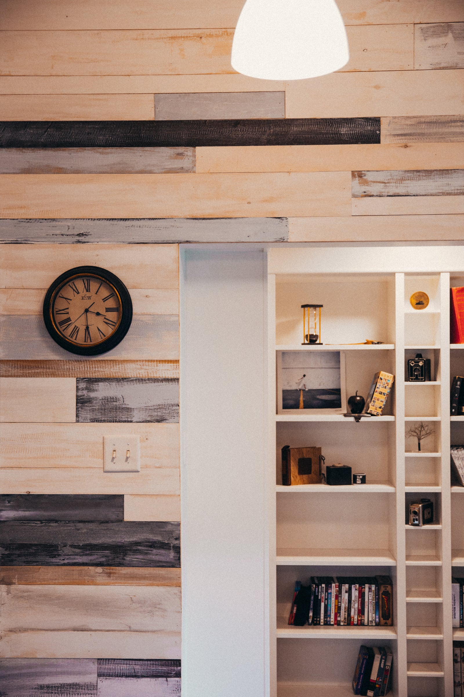
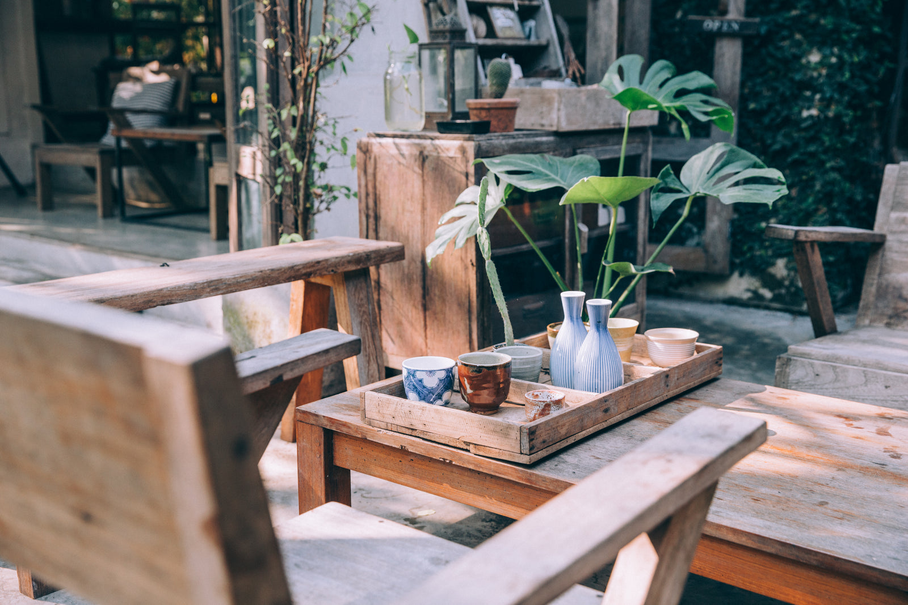
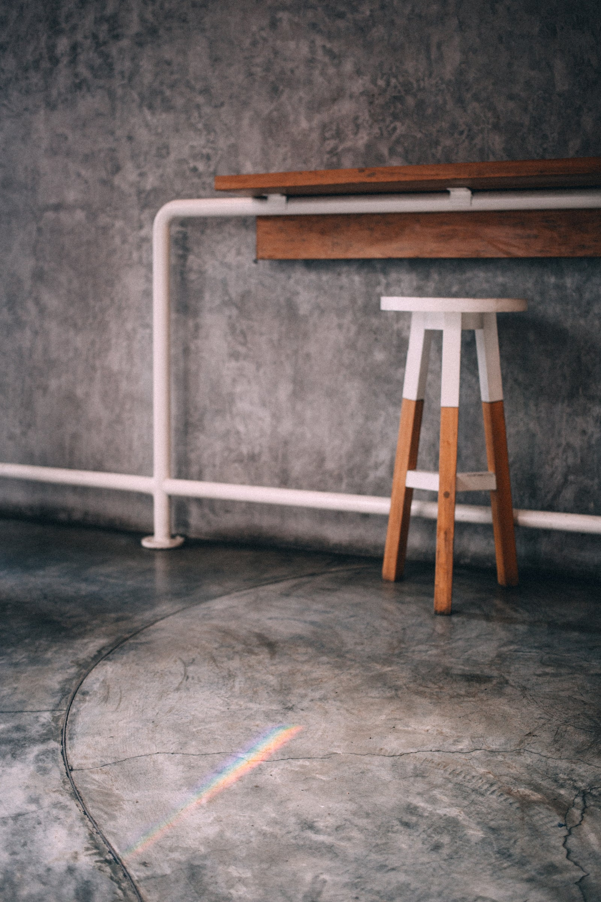
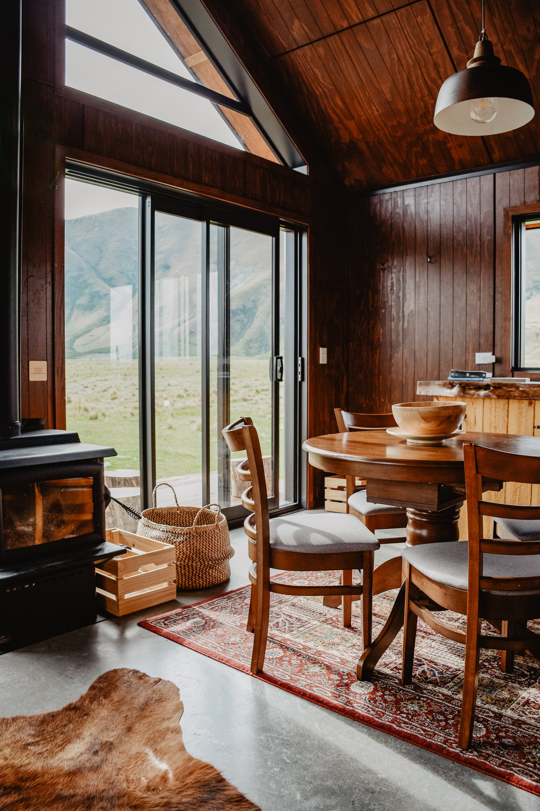
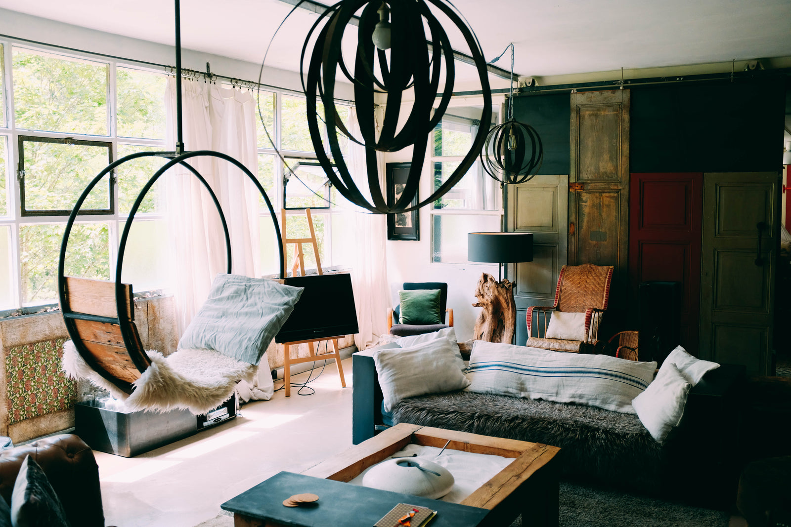
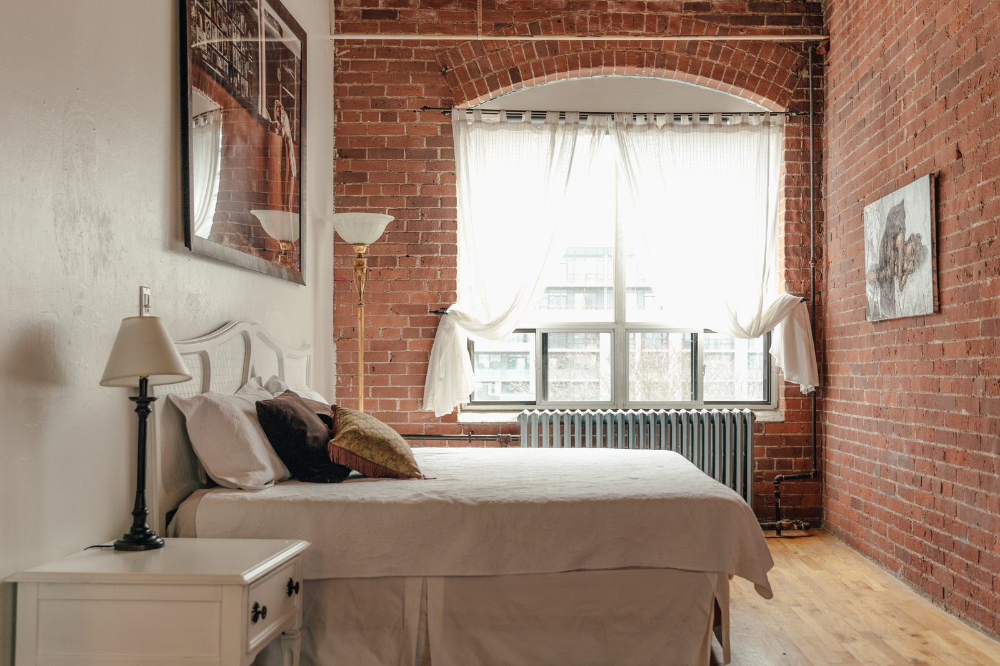
04 — Processo
4 etapas, zero mistério. Você acompanha cada uma.
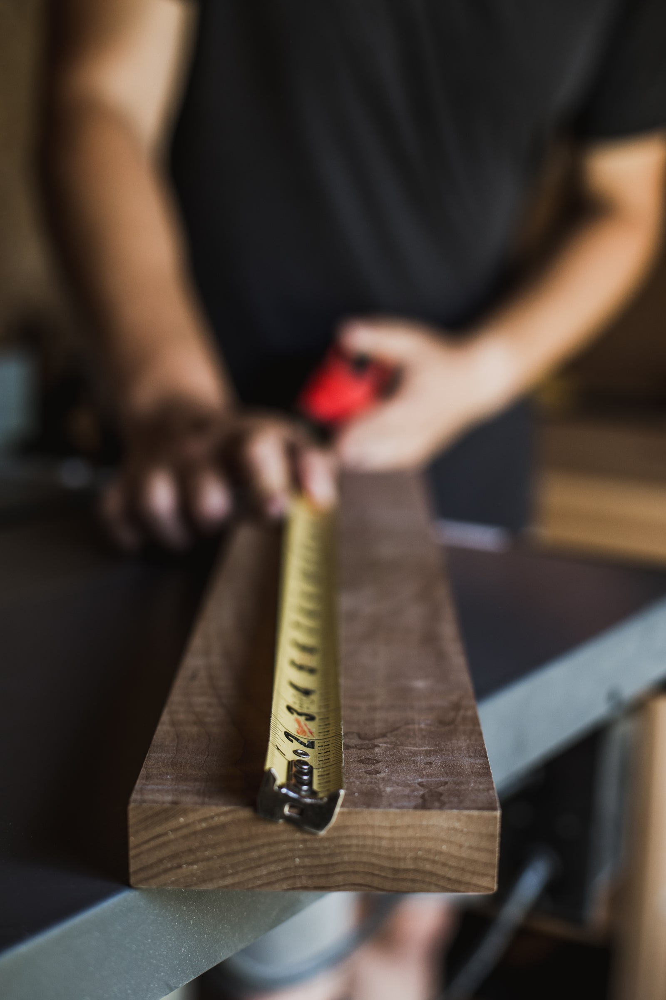
Vamos até você, medimos tudo e ouvimos o que precisa. Orçamento detalhado em 48h, sem compromisso.
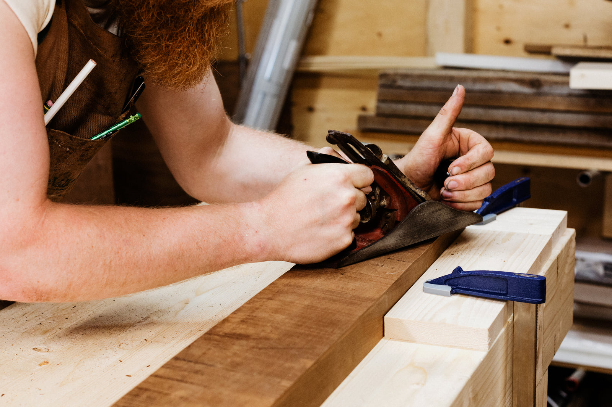
Você recebe o desenho em 3D com materiais, cores e ferragens escolhidos. Só produzimos quando você ama.
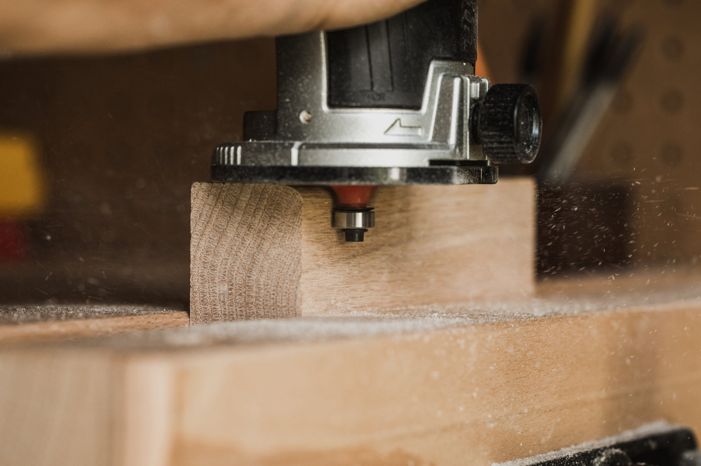
Corte, colagem, lixa e acabamento — feitos à mão pela nossa equipe, com controle de qualidade em cada peça.
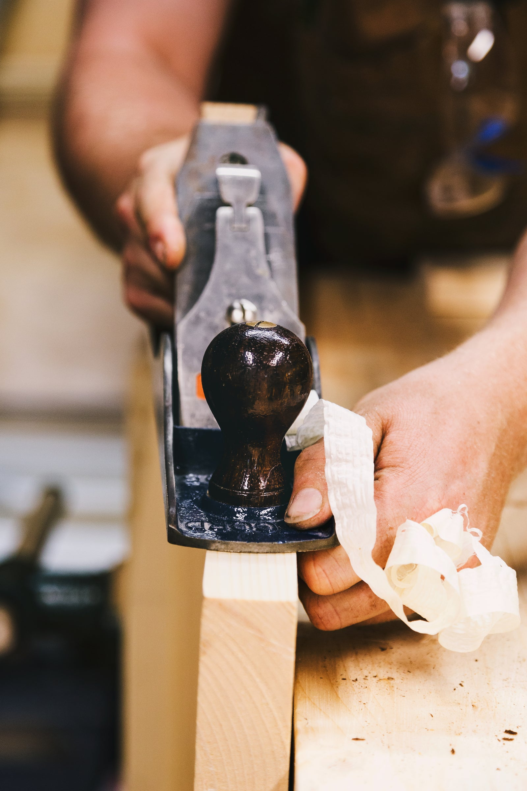
Levamos, instalamos, ajustamos e limpamos tudo. Você só precisa apontar onde quer o móvel.
05 — Depoimentos
“A cozinha ficou melhor do que eu imaginava. Prazo cumprido à risca e a equipe deixou tudo limpo no final do dia.”
“Contratei o restauro do armário da minha avó. Preservaram cada detalhe original. Arte de verdade.”
"Sou arquiteta e exijo muito. Eles entregam desenho bonito e execução impecável. Já indiquei em seis obras."
06 — Dúvidas
Não achou o que procurava? Chame no WhatsApp.
Cozinhas e closets: 25 a 40 dias após aprovação do projeto. Móveis avulsos: 10 a 20 dias. Prazo exato fica no contrato.
Não. A visita técnica, a medição e o orçamento detalhado são gratuitos e sem compromisso.
Trabalhamos com madeira de reflorestamento certificada: eucalipto, pinus, freijó, cumaru, carvalho e compensado de primeira linha. Também recebemos material indicado por você.
Toda a capital e região metropolitana. Para projetos fora, avalie o deslocamento no orçamento — normalmente compensa.
07 — Orçamento
Conte o que você precisa — respondemos em até 1 dia útil.